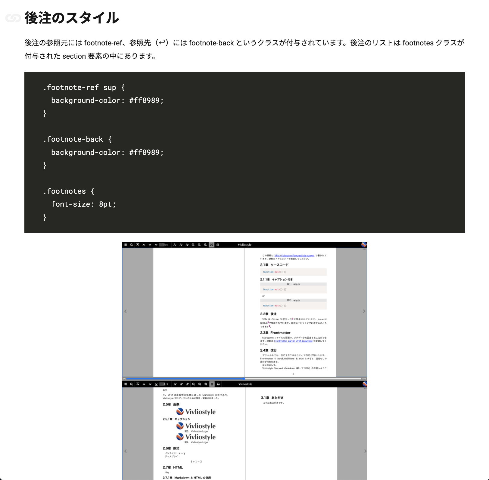
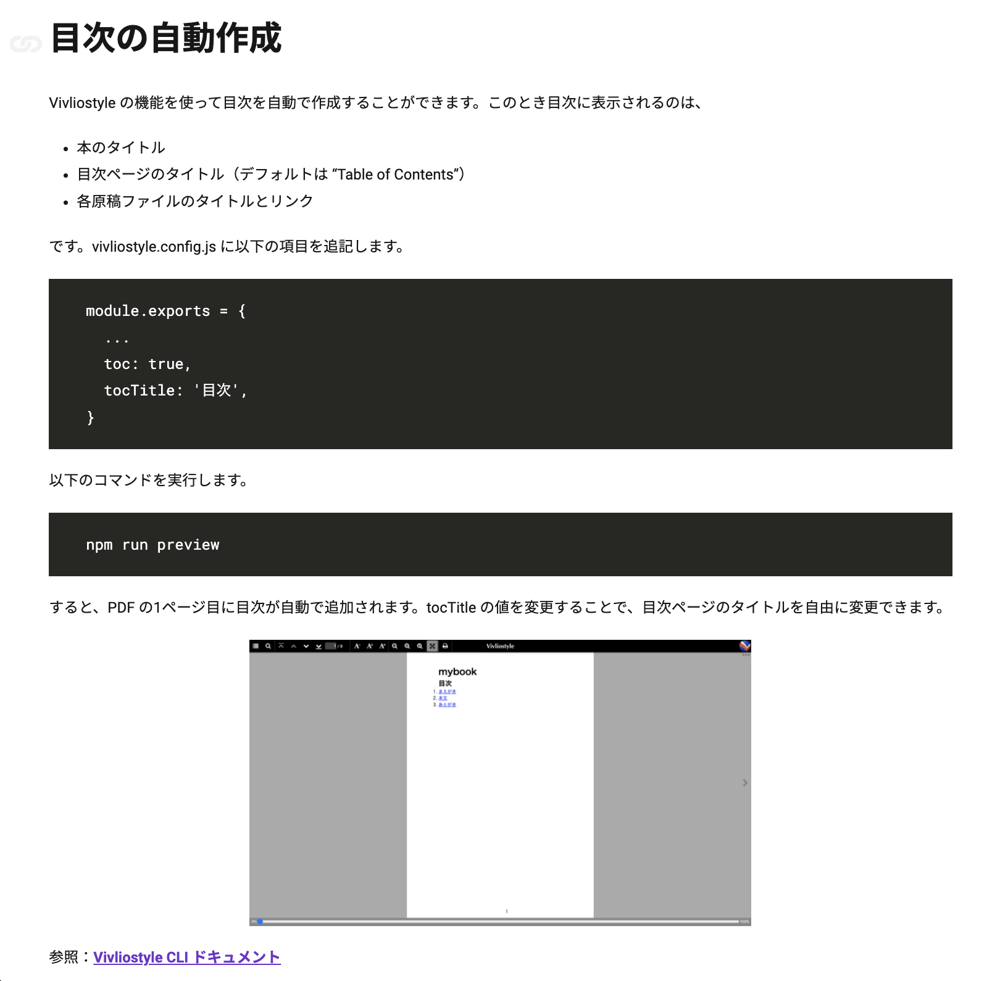

経緯
- Vivliostyle 関連ツールのドキュメントが整備されている
- 一方で、「Vivliostyle 触ってみようかな」の後のハードルが高い
- CSS を書いても思い通りの見た目にならない……
- ○○はどう書けばいい？
- そもそも CSS 組版で何ができるかわからない
CSS 組版に関する情報
- 情報はあるが、点在している
- Vivliostyle 公式の資料（例）
CSS 組版に関する tips の集約
- 公式サイトを見れば疑問を解決できるようにしたい
- CSS 組版入門ドキュメント
- ケースごとのサンプル
- etc...
チュートリアルの目標
- Vivliostyle を使って PDF 形式の出版物を作成できる
- CSS 組版に慣れていなくても、CSS 組版の基本が理解できる
目次
- ①インストール
- ②PDFの作成
- ③原稿とテーマのカスタマイズ
- ④用紙と文字のスタイル
- ⑤カウンタと柱のスタイル
- ⑥基本的な要素のスタイル
- ⑦目次の作成
②PDFの作成
- 雛形の作成
- PDF の作成
- プレビュー機能の使い方

③原稿とテーマのカスタマイズ
- PDF の作成に必要なファイル
- 設定ファイルの構造
- 原稿ファイル・既存テーマのカスタマイズ方法

⑥基本的な要素のスタイル
- セクションのスタイル
- 見出しのスタイル
- ソースコードのスタイル
- 図のスタイル
- 後注のスタイル

⑦目次の作成


チュートリアルの章を追加
- 段組みの設定
- Web フォントの設定
- 入稿用 PDF の作り方
- etc...
まとめ
- Vivliostyle を使った CSS 組版入門チュートリアルの公開
- 今後もコンテンツを追加予定
🖋 Happy writing!